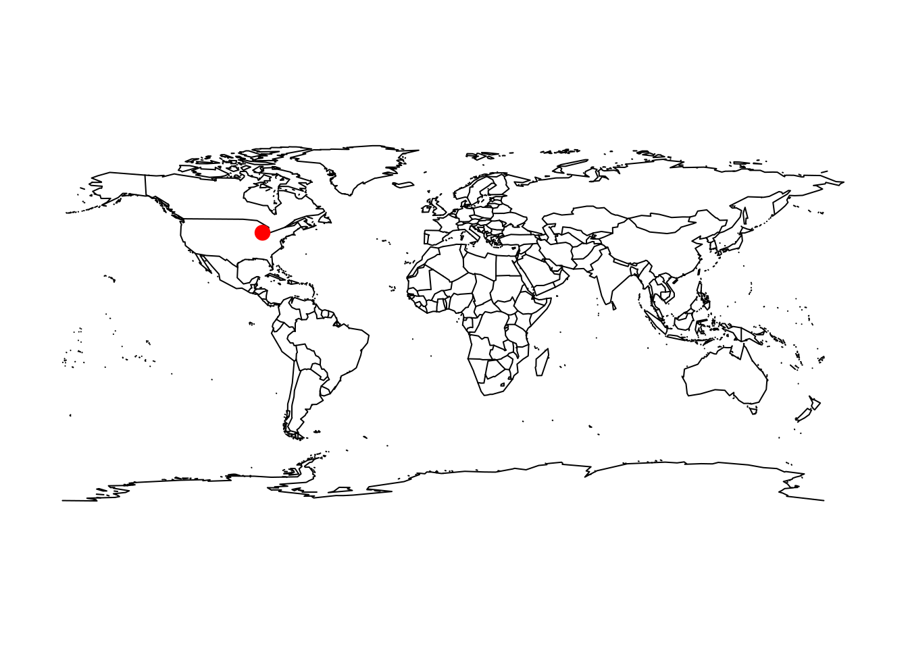
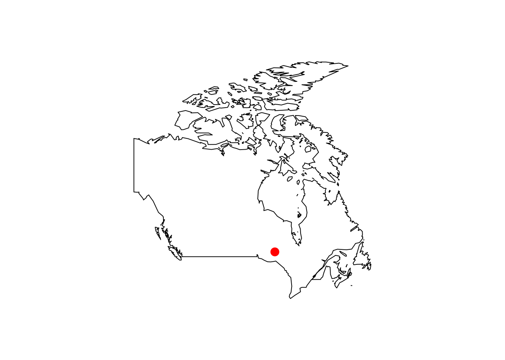
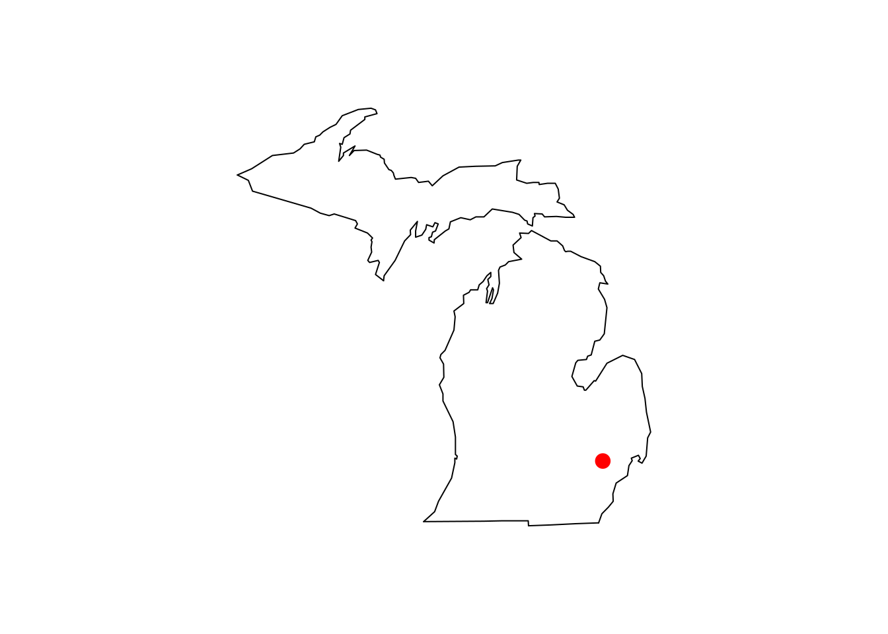

The wikilake package provides functions to scrape the metadata tables from lake pages on Wikipedia.
Usage
library(wikilake) #> Loading required package: maps
# metadata only lake_wiki("Lake Mendota") #> Retrieving data from: https://en.wikipedia.org/wiki/Lake_Mendota #> Name Location Type #> 1 Lake Mendota Dane County, Wisconsin,United States Natural freshwater lake #> Primary inflows Primary outflows Catchment area Basin countries Max. length #> 1 Yahara River Yahara River 562 United States 9.04 #> Max. width Surface area Average depth Max. depth Water volume Residence time #> 1 6.61 39.41654 12.8 25.3 NA 4.5 #> Shore length1 Surface elevation Frozen Lat #> 1 34.8 259 December 20 (average freezing date) 43.1066 #> Lon #> 1 -89.4247 # pretty printing metadata knitr::kable( dplyr::left_join( tidyr::pivot_longer(lake_wiki("Lake Mendota", clean = FALSE), cols = tidyr::everything(), values_to = "values_raw", values_transform = list(values_raw = as.character)), tidyr::pivot_longer(lake_wiki("Lake Mendota"), cols = tidyr::everything(), values_to = "values_numeric", values_transform = list(values_numeric = as.character)), by = "name")) #> Retrieving data from: https://en.wikipedia.org/wiki/Lake_Mendota #> Retrieving data from: https://en.wikipedia.org/wiki/Lake_Mendota
| name | values_raw | values_numeric |
|---|---|---|
| Name | Lake Mendota | Lake Mendota |
| Location | Dane County, Wisconsin,United States | Dane County, Wisconsin,United States |
| Type | Natural freshwater lake | Natural freshwater lake |
| Primary inflows | Yahara River | Yahara River |
| Primary outflows | Yahara River | Yahara River |
| Catchment area | 562 km2 | 562 |
| Basin countries | United States | United States |
| Max. length | 9.04 km | 9.04 |
| Max. width | 6.61 km | 6.61 |
| Surface area | 9740 acres | 39.4165392201752 |
| Average depth | 12.8 m | 12.8 |
| Max. depth | 25.3 m | 25.3 |
| Water volume | 500 million cubic metres | NA |
| Residence time | 4.5 years | 4.5 |
| Shore length1 | 34.8 km | 34.8 |
| Surface elevation | 259 m | 259 |
| Frozen | December 20 (average freezing date) | December 20 (average freezing date) |
| Lat | 43.1066 | 43.1066 |
| Lon | -89.4247 | -89.4247 |
# metadata + map lake_wiki("Gull Lake (Michigan)", map = TRUE) #> Retrieving data from: https://en.wikipedia.org/wiki/Gull_Lake_(Michigan)

#> Name Location
#> 1 Gull Lake Kalamazoo / Barry counties, Michigan, United States
#> Primary outflows Basin countries Surface area Max. depth Surface elevation
#> 1 Gull Creek [1] United States 8 34 268
#> Lat Lon
#> 1 42.399 -85.411lake_wiki("Gull Lake (Michigan)", map = TRUE, database = "usa") #> Retrieving data from: https://en.wikipedia.org/wiki/Gull_Lake_(Michigan)

#> Name Location
#> 1 Gull Lake Kalamazoo / Barry counties, Michigan, United States
#> Primary outflows Basin countries Surface area Max. depth Surface elevation
#> 1 Gull Creek [1] United States 8 34 268
#> Lat Lon
#> 1 42.399 -85.411lake_wiki("Lake Nipigon", map = TRUE, regions = "Canada") #> Retrieving data from: https://en.wikipedia.org/wiki/Lake_Nipigon

#> Name Location Lake type Primary outflows Catchment area
#> 1 Lake Nipigon Ontario Glacial Nipigon River 25400
#> Basin countries Surface area Average depth Max. depth Water volume
#> 1 Canada 4848 54.9 165 2.48e+11
#> Shore length1 Surface elevation Lat Lon
#> 1 1044 260 49.83 -88.5lake_wiki("Cass Lake (Michigan)", map = TRUE, database = "state", regions = "Michigan") #> Retrieving data from: https://en.wikipedia.org/wiki/Cass_Lake_(Michigan)

#> Name Location Basin countries Surface area Max. depth
#> 1 Cass Lake Oakland County, Michigan United States 5.179997 37
#> Surface elevation Lat Lon
#> 1 283 42.606 -83.365